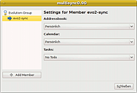

Plugin-Evolution
Archivierte Anleitung
Dieser Artikel wurde archiviert, da er - oder Teile daraus - nur noch unter einer älteren Ubuntu-Version nutzbar ist. Diese Anleitung wird vom Wiki-Team weder auf Richtigkeit überprüft noch anderweitig gepflegt. Zusätzlich wurde der Artikel für weitere Änderungen gesperrt.
Zum Verständnis dieses Artikels sind folgende Seiten hilfreich:
Eine der interessantesten Möglichkeiten von OpenSync [1] ist für GNOME-Nutzer die Synchronisation mit den PIM-Daten  von Evolution. Dazu wird das Paket opensync-plugin-evolution benötigt, mit dessen Hilfe sich Adressbuch, Kalender und Aufgabenliste mit anderen Anwendungen, mit den Daten anderer Evolution-Benutzer, mit externen Geräten oder einfach in eine Sicherungsdatei abgleichen lassen.
von Evolution. Dazu wird das Paket opensync-plugin-evolution benötigt, mit dessen Hilfe sich Adressbuch, Kalender und Aufgabenliste mit anderen Anwendungen, mit den Daten anderer Evolution-Benutzer, mit externen Geräten oder einfach in eine Sicherungsdatei abgleichen lassen.
Konfiguration¶
Das Plugin lässt sich im MultiSync-GUI [1] bereits über eine graphische Oberfläche einrichten; KitchenSync-Benutzern steht bisher nur dasselbe Skript zur Verfügung, über das auch im Terminal die Konfiguration abläuft. Nur die Skript-Variante bietet aber die Möglichkeit, auf Daten anderer Evolution-Benutzer zuzugreifen.
MultiSync-GUI¶
 Zur Konfiguration des Plugins im Multisync-GUI [1] markiert man unter "Bearbeiten" das evo2-sync-Plugin, es erscheint nebenstehende Oberfläche:
Unter "Adressbook", "Calendar" und "Tasks" kann nun ausgewählt werden, welches Adressbuch, welcher Kalender und welche Aufgabenliste synchronisiert werden soll.
Terminal und KitchenSync¶
Nach Aufruf des Konfigurations-Befehls im Terminal [2] bzw. nach Markierung des Plugins in KitchenSync [1] erscheint folgendes Skript (manchmal steht alles in einer einzigen Zeile):
<?xml version="1.0"?> <config> <address_path>default</address_path> <calendar_path>default</calendar_path> <tasks_path>default</tasks_path> </config>
In allen drei Optionen address_path, calendar_path und tasks_path lassen sich die Ablageorte der entsprechenden Datenbanken angeben. Diese Einstellungen brauchen normalerweise aber gar nicht verändert zu werden: Mit default wird automatisch auf die persönlichen Datenbanken des momentanen Benutzers verwiesen. Wer aber andere Adressbücher, Kalender oder Aufgabenlisten synchronisieren will, muss anstelle von default den Weg zum Ordner angeben, in dem sich die entsprechenden Daten befinden, und zwar im Format
<DATENBANKTYP_path>file:///WEG/ZUM/ENTSPRECHENDEN/ORDNER</DATENBANKTYP_path>
Werden die Pfade unter Anpassung des Benutzernamens wie im folgenden Beispiel angegeben, so verweisen sie auf dessen persönliche Datenbanken. Damit ist es beispielsweise möglich, die PIM-Daten verschiedener Nutzer untereinander abzugleichen.
<?xml version="1.0"?> <config> <address_path>file:///home/BENUTZERNAME/.evolution/addressbook/local/system</address_path> <calendar_path>file:///home/BENUTZERNAME/.evolution/calendar/local/system</calendar_path> <tasks_path>file:///home/BENUTZERNAME/.evolution/tasks/local/system</tasks_path> </config>

- Erstellt mit Inyoka
-
 2004 – 2017 ubuntuusers.de • Einige Rechte vorbehalten
2004 – 2017 ubuntuusers.de • Einige Rechte vorbehalten
Lizenz • Kontakt • Datenschutz • Impressum • Serverstatus -
Serverhousing gespendet von